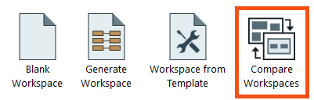
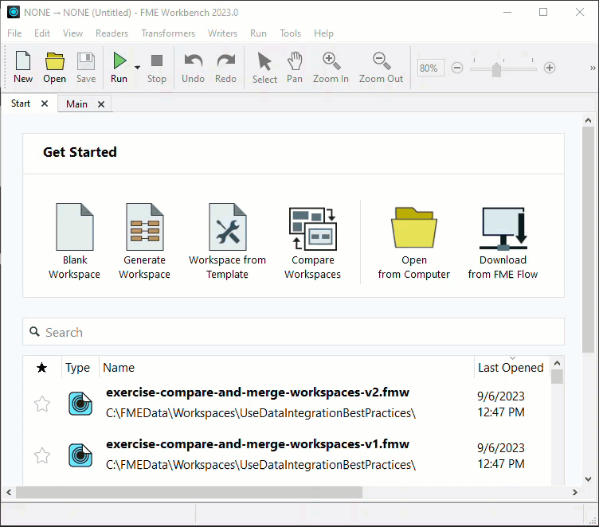
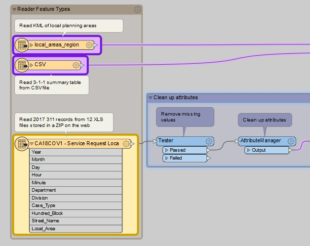
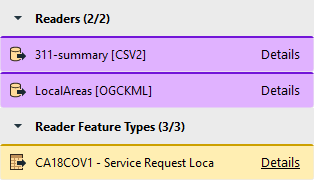
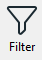
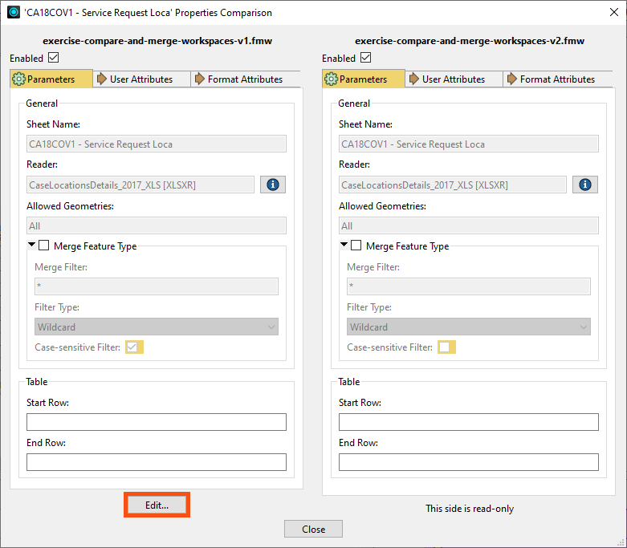

After completing this lesson, you’ll be able to:
One of FME’s strengths is its ability to build complex solutions that apply in multiple departments of an organization. Colleagues often share workspaces and make iterations on those workspaces. Inheriting a workspace from a colleague or working on a workspace together has often resulted in sending files and screenshots back and forth. Compare Workspaces saves time and improves this collaborative experience.
Compare Workspaces in FME allows you to compare two workspaces simultaneously. These differences are represented visually, allowing you to compare the two workspaces efficiently. You can copy over elements into the Editable canvas to make changes based on the differences. If you want to integrate Git into your Workbench comparison workflow, you can do so on the command line, TortoiseGit, and Sourcetree to interface directly with the Compare Workspaces tool.
Compare Workspaces can be found in two ways. On the FME Workbench Start tab, click Compare Workspaces. You can also access it through Tools > Compare Workspaces.

This will open the Compare Workspaces dialog. You can select two workspaces you want to compare.

Compare Workspaces has a left (Editable) and right (Read-Only) canvas with edit controls in the middle toolbar. Toggle the Help icon in the toolbar to learn more about how to use Compare Workspaces.
View Workspace Differences
Canvas objects are color-coded to represent their status:

Changes are also displayed below the canvas in a list:

You can filter this list By Type of Component or By Component Name using the Filter button.

Make Changes to Workspaces
You can review the changes and choose which ones you want to keep. You can open individual objects and click the Edit... button to change objects on the Editable canvas selectively.

If you want to apply all the changes from an object on the Read-Only canvas to the Editable workspace, click an object and choose Copy to Left. This will copy all differences over and immediately re-compare the workspaces.